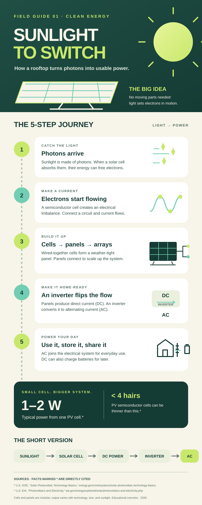

The SVG source uses an 800 × 2000 px artboard. The exported PNG is rendered at 1200 × 3000 px (150 DPI). Sources for the PV cell output and material-thickness facts are cited on the artwork.
A five-step guide to how photovoltaic cells turn sunlight into electricity, from photons to the AC power used in everyday systems.

The SVG source uses an 800 × 2000 px artboard. The exported PNG is rendered at 1200 × 3000 px (150 DPI). Sources for the PV cell output and material-thickness facts are cited on the artwork.